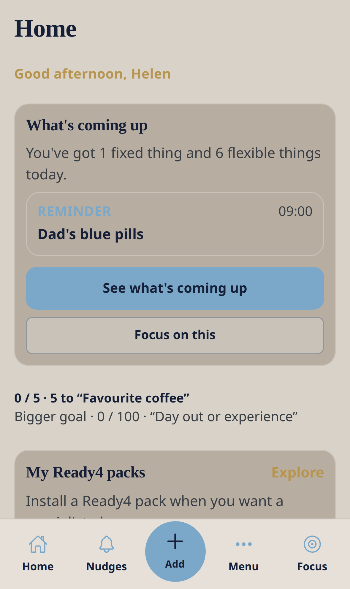
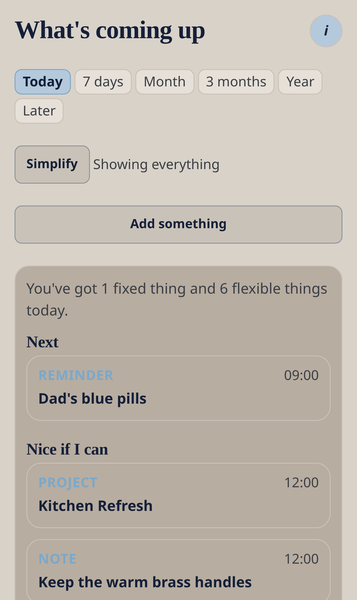

Core module — no Ready4 pack required
Home and What’s coming up
See the next real thing first. One timeline for today, this week, and later.
Nudge me Ready v3 · 0.3.1 · Bottom tab: Home. Also Menu → What’s coming up.


Workflow
- Open Home after See my day.
- Read What’s coming up — the next dated item is shown first.
- Tap See what’s coming up for Today / 7 days / Month / later.
- Use Show my appointments here if you want phone calendar events on the same timeline.
- Focus on this starts a calm session on the next item.
- If the timeline is empty, tap Add something you don’t want to forget.
Good to know
- No Ready4 pack is required.
- Holidays and similar calendar noise are skipped.